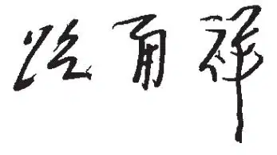

英文
英文自近代科学诞生以来，特别是20世纪以来，随着人类对自然的认识不断加深，随着人类利用自然资源的手段与方法不断丰富，技术创新、产业进步已成为推动生产力空前发展和人类社会进步的决定性因素，极大地改变了人类的生产与生活方式，使人类社会发生了显著的变化。 英文
20世纪是科学革命的世纪。量子理论和相对论的创立与发展，改变了人类的时空观和对物质与能量统一性的认识，成为了20世纪一系列重大科学发现和技术发明的理论基石；DNA双螺旋结构模型的建立，标志着人类在揭示生命遗传奥秘方面迈出了具有里程碑意义的一步，奠定了生物技术的基础，对现代农业和医学的发展产生了深远影响；信息科学的发展为计算机科学、通信技术、智能制造提供了知识源泉，并为人类认知、经济学和社会学研究等提供了理论基础；大陆漂移学说和板块构造理论，对地震学、矿床学、古生物地质学、古气候学具有重要的指导作用；新的宇宙演化观念的建立为人们勾画出了基本粒子和化学元素的产生、分子的形成和生命的出现，乃至整个宇宙的起源和演化的图景。 英文
20世纪也是技术革命的世纪。基础研究的重大突破和市场的强劲拉动，使人类在技术领域获得了前所未有的成就，能源、材料、信息、航空航天、生物医学等领域发生了全新变化。新能源技术为人类社会发展提供了多元化的动力；新材料技术为人类生活和科技进步提供了丰富的物质材料基础，推动了制造业的发展和工业的繁荣；信息技术使人类迈入了信息和网络时代；航空航天技术拓展了人类的活动空间和视野；医学与生物技术的进展极大地提高了人类的生活质量和健康水平。 英文
历史上，中国曾经创造出辉煌的科学技术，支撑了中华民族的生存、发展和延续。在15世纪之前的数百年里，中国的科技水平曾遥遥领先于欧洲。李约瑟博士曾经指出，从雪花的形状到绘图的艺术、血液循环、造纸、养蚕，包括更有名的指南针和火药，都是首先由中国人发现或发明的。中国的“四大发明”影响了世界的发展进程，古代中国的天文记录至今仍为天文学家在研究天体物理现象时所使用。中华文明同其他悠久的人类文明一样，成为了近代科学技术的重要源泉。 英文
但我们也要清醒地看到，发生在17～18世纪欧洲的科学革命、18～19世纪的第一次和第二次工业革命，以及现代科学教育与知识的传播，加快了西方现代化的进程，同时也拉大了中国与西方的差距。 英文
鸦片战争的失败给古老的中华帝国敲响了警钟。就在《自然》创刊前后，中国的一批精英分子看到了科学技术对于国家发展的重要性，一批批中国学子到西方高校及研究机构学习，其中一些人在科学领域作出了杰出的贡献。同时，一大批留学生回国，同国内的知识分子一道，为现代科学技术在中国的发展奠定了基础。 英文
新中国成立60年来，中国在科学技术方面取得了一系列成就。在很短的时间里，独立自主地研制出“两弹一星”；在陆相生油理论指导下，发现了大庆油田；成功合成了牛胰岛素，这是世界上第一个通过化学方法人工合成的蛋白质；杂交水稻研发及其品种的普及，显著提高了水稻产量，造福了全世界几亿人。中国人在材料科学、航天、生命科学等许多领域，也取得了一批重要成果。这些都展现了中国在现代科技领域所取得的巨大进步。 英文
当前，中国经济持续快速增长，科研产出日益增加，中国的许多重要成果已经发表在像《自然》这样的世界一流的科技期刊上，扩大了中国科学研究的影响，推动了中国科学家和国外同行的交流与合作。现在，中国已成为世界重要的科技力量。可以预见，在未来，中国将在科学和技术方面取得更大的进步。 英文
伴随着现代科学产生的科技期刊，忠实地记录了科学发展的轨迹，在传播和促进现代科学的发展方面发挥了重要的作用。科技期刊及时地报道学术进展，交流科学思想和方法，探讨未来发展方向，以带动学术争鸣与繁荣，促进公众对科学的理解。中国在推动科技进步的同时，应更加重视科技期刊的发展，学习包括《自然》在内的世界先进科技期刊的办刊理念和方法，提高期刊的数字化水平，使中国的一些科技期刊早日具备世界影响力，为中国科学技术的发展创建高水平的平台。 英文
20世纪的生物学、地球科学、环境科学、材料科学和物理学等领域的许多重大发现，都被记录在《自然》上。外语教学与研究出版社、麦克米伦出版集团和自然出版集团携手合作，从《自然》创刊近一百五十年来发表过的十万余篇论文中撷取精华，并译成中文，以双语的形式呈现，纂为《〈自然〉百年科学经典》丛书。我认为这是一项很有意义的工作，并相信本套丛书的出版将跨越不同的文化，促进国际间的科技交流，向广大中国读者提供高水平的科学技术知识文献，为提升我国科学技术研发水平发挥积极的作用。我赞成并积极支持此项工作。 英文
丛书将带领我们回顾近一百五十年来科学的发展历程，从中探索科学发展的规律，寻求思想和智慧的启迪，感受科学家们百折不挠的钻研精神。阅读这套丛书，读者可以重温科学史上一些科学巨匠作出重大科学发现的历程，拓宽视野，拓展思路，提升科研能力，提高科学道德。我相信，这套丛书一定能成为社会各界的良师益友，增强他们对科学的了解与热情，加深他们对科学的尊重与信心。 英文
借此机会向外语教学与研究出版社、麦克米伦出版集团、自然出版集团策划出版本丛书的眼光和魄力表示赞赏，对翻译者、审校者和编辑者为保证丛书质量付出的辛苦劳动表示感谢。
是为序。 英文

编者注：此篇原为《〈自然〉百年科学经典》（十卷本）的序。 英文